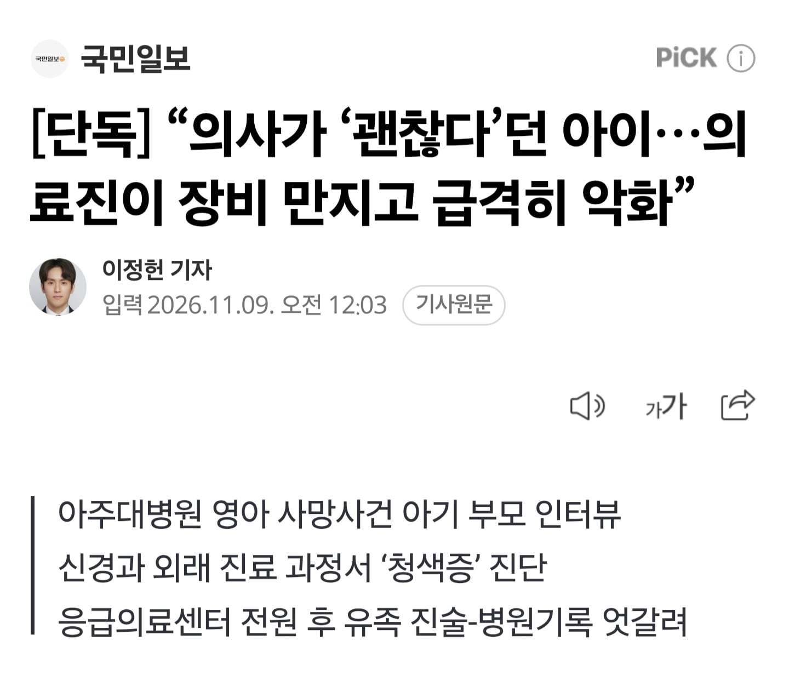

https://n.news.naver.com/article/005/0001883775?sid=102

요약하면
유족은 산소치료 후 의료진으로부터 아이가 괜찮다는 설명을 들었지만, 이후 한 의료진이 산소 관련 장비를 조작하자 아이 상태가 급격히 악화됐다고 주장함.
반면 병원 간호기록에는 응급실 도착 직후부터 산소포화도가 급격히 떨어진 것으로 기록돼 있음.
유족은 담당 의사가 산소를 많이 공급했다고 설명했다가 적게 공급했다고 말을 바꿨다고도 주장함.
병원 측 기록에는 선천성 심장질환이나 폐고혈압 등 다른 원인 가능성을 설명했다고 기재돼 있음.
결국 유가족 입장에선 병원 과실이 있다는건데...조사를 해보긴 해야할듯. 근데 그 방식이 꼭 압수수색이어야할지는...
한편으로는 매번 사람이 죽어나가는 응급실에 사람 죽으면 일단 수사가 들어간다면 유가족입장에서는 고소가 무조건적인 이득인 상황일듯. 아님말고니까. 병원은 그 스트레스를 못견디고 때려쳐나갈거고...
ai 빨리 발전해서 ai 의사 도입하자!